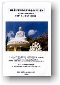
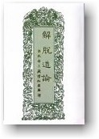

|
BuddhaSasana Home Page |
Vietnamese, with Unicode Times font |
|  |
GIẢI THOÁT
ĐẠO LUẬN Thiện Nhựt chuyển dịch sang tiếng Việt |
 |
|
PHẦN TÌM HIỂU Phần Tìm hiểu Phẩm 9: Năm Thần Thông Chuyển tiếp: Các đề mục quán tưởng được chỉ dạy rõ ràng ở hai Phẩm 7 và 8 vừa qua, có mục đích giúp tâm hành giả đắc được định lực. Khi định lực đã được tự tại, hành giả nhập và xuất ra Định một cách dễ dàng và an tường ở bốn cấp Thiền, nếu muốn tu tập tiếp để đắc được các Thần Thông, thì Phẩm 9 nầy sẽ trình bày cách thức hành trì. 075. Đắc Thần thông chẳng phải là mục tiêu chánh của việc tu tập để được giải thoát. Theo Kinh sách, đắc thần thông vẫn chưa được hoàn toàn giải thoát, vì phiền não vẫn còn chưa được diệt tận, và nghiệp lực vẫn còn tác động. Vì lẽ đó, việc tu tập Thần thông chưa phải là mục tiêu chánh yếu cho việc giải thoát khỏi cảnh sanh tử của Luân hồi. Vào thời Đức Phật còn tại thế, Ngài thường nhắc nhở các Tỳ-kheo rằng việc tu tập theo Chánh pháp phải nhằm mục tiêu tận diệt các lậu hoặc để được giải thoát; việc đắc thần thông không phải là việc chánh yếu, chớ có mong cầu, vì một khi giới hạnh thanh tịnh, định lực thâm sâu, trí huệ khai triển thì việc đắc thần thông tự nó sẽ đến. Vả lại, Ngài cấm hẳn việc thi triển thần thông trong khi đi hoá độ chúng sanh, vì làm như thế, tuy được dân chúng có phần thán phục nhưng chẳng vì thế mà họ thật tình tuân phục theo Chánh pháp. Bởi các lẽ đó, khi học qua Phẩm 9, hành giả chớ nên quá mong cầu đắc được thần thông, hay cố thi triển một vài thắng pháp, để được ngưỡng mộ, vì vẫn còn xa với mục tiêu được hoàn toàn giải thoát. 077. Dàn bài của Phẩm 9: Năm Thần Thông: I. Nhập đề: Khi đắc Định lực ở bốn cấp Thiền được tự tại, nhập và xuất định được an tường, hành giả có thể tu tập về Năm Thần Thông: thân thông, thiên nhĩ thông, tha tâm thông, túc mạng thông và thiên nhãn thông. II. Thân bài: Thân bài chia ra làm năm phần, mỗi phần nói về một loại Thần Thông: A. Thân thông: Thân thông là thân thể tùy ý muốn mà biến hoá. Có ba loại biến hoá: 1. Thọ trì biến hoá: một người biến thành nhiều, nhiều người biến thành một người. 2. Tác biến hoá: bỏ hiện thân hoá thành thân trẻ nhỏ, hoặc thân rồng, hoặc thân thiên chúng (= chúng sanh cõi Trời) 3. Tùy ý biến hoá: ngoài hiện thân ra, biến thêm các hoá thân khác có đầy đủ các bộ phận, sanh hoạt như hiện thân 4. Các hình thức biến hoá:
5. Ai tu biến hiện được? Người đắc Tứ Thiền tự tại. 6. Khởi tu như thế nào? Do tu dục định, mà đắc các thắng hành của bốn như ý túc:
7.Khởi lạc tưởng (tưởng vui) và khinh tưởng (tưởng nhẹ)
8. Thọ trì biến dùng ba cách di duyển: (1) bộ hành, (2) tâm hành và (3) phong hành mà đi trong Hư-không. 9. Tác biến tu hành bốn như ý túc, nhập vào Tứ Thiền, biến hiện thân trở thành trẻ nhỏ, thành núi, biển... 10. Tùy ý biến, nhập vào Tứ Thiền, hiện thân biến ra nhiều hoá thân cử động, nói năng như hiện thân. B. Thiên nhĩ: 1. Thiên nhĩ là lỗ tai vượt hơn tai người thường, nghe được âm thanh các cõi khác. 2. Tu tập thiên nhĩ cách nào?
3. Công đức của thiên nhĩ. C. Tha tâm thông: 1. Tha tâm trí: Khả năng biết được tâm tưởng kẻ khác. 2. Tu tâp tha tâm thông cách nào?
3. Công đức của Tha tâm thông. D. Túc mạng thông: 1. Túc mạng thông: khả năng nhớ biết được kiếp trước 2. Tu tập Túc mạng thông như thế nào?
3. Công đức của Túc mạng thông. E. Thiên nhãn: 1. Thiên nhãn: khả năng nhìn xa vào các cõi khác, vượt hơn mắt thịt. 2. Tu tập Thiên nhãn cách nào?
3. Công đức của Thiên nhãn. III. Kết luận: Năm loại Thần Thông kể trên thuộc về Thần Thông ở thế gian, ở cõi sắc giới còn lậu hoặc. 078. Tìm hiểu nghiã các chữ khó trong Phẩm 9: Thần Thông = các khả năng của Thân tâm vượt hơn người thường, như thiên nhãn, thiên nhĩ, túc mạng thông, tha tâm thông, biến hoá. Luận văn giải thích rất rõ các loại Thần Thông nầy. Hoá thân: Hoá = biến hoá, Thân = thân thể. Ngoài tấm thân hiện có, người có Thần Thông có thể biến hoá thêm nhiều thân hình khác, ở các nơi khác, cũng cử động, nói năng như người thường, nhưng chẳng có mạng sống. Minh thuật biến: Minh = sáng, khéo; Thuật = phương cách, cách thức, mánh khoé. Ở đây, chữ Minh thuật chỉ đến các bùa chú, các phương tiện siêu phàm. Như ý túc: Như ý = được như ý muốn, hễ tâm khởi lên ý muốn, là được ngay điều mình muốn. Túc = đủ, đầy đủ. Bốn như ý túc được Luận văn kể rõ, xin xem lại. Tu tập bốn như ý túc bằng cách tập luyện đầy đủ bốn chánh cần (tức là chánh tịnh tấn). Dục định: Dục = muốn; định = tình trạng đang nhập đînh, chẳng xao động, lắng yên. Ở đây, chữ dục định chẳng có nghiã xấu, dục chỉ chỉ vào ý định, chẳng có nghiã là ham mê như chữ tham dục. Khinh tưởng: Khinh = nhẹ nhàng; Tưởng = ý tưởng. Khởi lên khinh tưởng là trong tâm khởi lên ý muốn có được thân hình nhẹ nhàng. Quên được ý niệm sức nặng cơ thể đi. Tầm: Xem lại trang 415, Phẩm 8; đơn vị đo chiều dài. Tiệm tiến: Tiệm = từ từ, theo thứ lớp; Tiến = đi tới. Phương tiện tiệm tiến là cách bước tới từ từ, tu tập qua mọi giai đoạn, chẳng vượt bỏ giai đoạn nào. Chỉ pháp: Chỉ = ngưng lại, đình chỉ; Pháp = phép. Chỉ pháp là phép đình chỉ lại, ngưng lại, chẳng tiến tới nữa. Bộ hành = đi bộ, đi bằng chơn Tâm hành: Ở đây, trang 218 Luận văn, tâm hành có nghiã là đi bằng tâm, tức là khởi lên Khinh tưởng, khiến thân trở nên nhẹ nhàng mà bay đi. Phong hành; Phong = gió; Hành = đi. Phong hành là nương theo gió mà di chuyển. A-tu-la: phiên âm chữ Pàli Asura, bực thần linh, có nhiều thần thông, tánh hay nóng giận, thường gây chiến với các bực Trời. Ái dục: Ái = thương yêu, Dục = ham muốn. Ái dục có thêm ý đam mê trong sự thương yêu. Túc mạng: Túc = đã qua; Mạng = đời sống; Túc mạng là cuộc đời, đời sống trong kiếp trước. Tiền kiếp: Tiền = trước kia; Kiếp = đời sống; chữ Kiếp phiên âm chữ Kappa, cuộc sống kéo dài nhiều triệu năm. Còn gọi là Đại kiếp, Trung Kiếp và Tiểu Kiếp. Một tiểu kiếp tính ra hơn 16 triệu năm; một trung kiếp bằng hai mươi tiểu kiếp, và một đại kiếp bằng bốn trung kiếp. Sơ sanh: Sơ = ban sơ, lúc khởi đầu; Sanh = ra chào đời. Sơ sanh trái nghiã với hiện sanh, đang sống; Vị sanh là chưa sanh, sẽ sanh vào thời vị lai. Tam-muội: Chánh định; phiên âm chữ Pàli Samàpatti. Quang tưởng: Quang = ánh sáng; Tưởng = ý tưởng. 079. Nhận xét về Phẩm 9: Năm Thần Thông. Nơi Phẩm 9 nầy, Luận văn chỉ cách tu tập các khả năng siêu phàm, gọi là năm thần thông, thân thể biến hiện thành nhiều thân khác, tai có thể nghe cả âm thanh nơi cõi sắc giới, biết được đời sống thuộc về các kiếp trước, mắt có thể nhìn thấy xa ngàn dặm, v.v. Ngày nay, nơi các bực tu hành, ta chẳng thấy việc thi triển các thần thông, như trong Kinh sách có nhắc lại việc Ngài Xá-lợi-phất, Ngài Mục-kiền-liên thực hành thần thông vào thời Đức Phật còn tại thế. Đó là vì việc thi triển thần thông chẳng phải là việc thông thường được thấy luôn; nhưng chẳng vì thế, mà quả quyết thật sự chẳng có các thần thông. Tại sao? Vì đối với một việc ta chưa từng thấy, ta chẳng thể nào quyết đoán việc đó chẳng có thật được; thái độ dè dặt, chờ khi thấy mới tin là đúng, nhưng chẳng nên cố bảo rằng đó là không. Như tiếng nói, âm thanh theo làn sóng điện vang khắp hoàn cầu, ta chẳng thấy bằng mắt thịt, chẳng nghe bằng tai phàm, nhưng vẫn là điều có thật. Nhưng đối với những hành giả còn sơ cơ, chẳng nên vì mê thích, vì thán phục các Thần Thông mà để cho các bọn buôn Thần bán Thánh, nhan nhản ngày nay, lừa gạt mình. Vả lại, khi đọc qua Luận văn, ta thấy rõ việc tu tập các Thần Thông, đều bắt đầu ngay trên sự việc thực tế hằng ngày trước. Thí dụ như thiên nhãn thông khởi đầu bằng nhìn các màu sắc thanh tịnh, như thiên nhĩ thông bắt đầu tu tập nghe chính các âm thanh thông thường từ gần đến xa, túc mạng thông khởi công nhớ lại các việc hằng ngày trong một ngày, hai ngày rồi lâu đến cả tuần, cả tháng trước. Như thế, chẳng có chi là quá siêu phàm, hay mầu nhiệm, chỉ tùy theo định lực có thâm hậu hay không mới có thể tu tập từ từ đắc các thắng pháp đó. Xét cho cùng, nếu còn chưa đắc được Thần Thông, thì cũng nên xét kỹ lại định lực của chính mình, chớ đừng nôn nóng nghe theo lời dạy vu vơ của bàng môn tả đạo mà phải lâm vào những căn bịnh Thiền khó chữa trị. Những công dụng của các Thần Thông, như nhìn thấy xa muôn dặm, nghe tiếng cách ngàn trùng, nhớ các khoảng đời trước, biết được tâm trạng của kẻ khác, du hành lên Không gian, sự tiến bộ ngày nay của Khoa học đã lần lượt đạt được nhiều kết quả rất ngoạn mục, nào có thua chi các Thần Thông. Các phương tiện truyền thông tối tân, các viễn vọng kính, các phi thuyền không gian lần lượt đưa con người rời khỏi cuộc sống dính chặt vào quả đất nầy. Các sự khám phá về Vô thức trong khoa Phân tâm học cũng lần lần trình bày các chứng cớ của đời sống trước cuộc sống hiện tại. Bấy nhiêu lý do đó cũng đủ khiến cho ta chớ quá mong cầu đắc được Thần Thông, mà hãy cứ nhìn đến mục tiêu chánh yếu của việc tu tập là: - giải thoát khỏi các phiền não, để cho thân tâm được tự tại, trong cảnh an lạc. -ooOoo-
Ðầu trang |
Mục lục |
Chân thành cám ơn Cư sĩ Thiện Nhựt đã gửi tặng bản vi tính (Bình Anson, 01-2004)
[Trở
về trang Thư Mục]
last updated: 16-01-2004